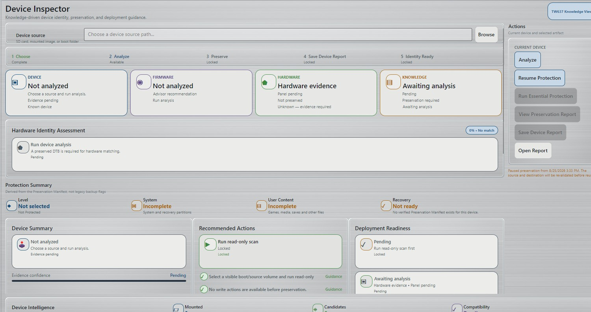

1. Conecta el medio original
Inserta la tarjeta SD original o conecta el medio fuente al ordenador. No cambies nombres, reorganices, borres ni “limpies” archivos en el original primero.
2. Abre el Inspector de dispositivo
En RLB, selecciona Inspector de dispositivo. Este espacio reúne selección de fuente, identidad, estado de protección, acciones recomendadas y preparación para el despliegue.

3. Elige la fuente que RLB debe inspeccionar
Usa el campo Fuente del dispositivo en la parte superior del Inspector y selecciona la fuente que representa el medio que quieres que RLB examine.
La interfaz admite fuentes como una tarjeta SD, una imagen montada o una carpeta de arranque. Selecciona la que corresponda al medio original que estás protegiendo.
4. Ejecuta Analizar
Ejecuta Analizar cuando hayas seleccionado la fuente correcta. Esta es la etapa de recopilación de pruebas. RLB examina la fuente para razonar sobre identidad, particiones, contenido y la protección que puede ser necesaria.
5. Revisa el resultado del dispositivo antes de confiar en él
Después del análisis, revisa las áreas Dispositivo, Firmware, Hardware y Conocimiento, además de la Evaluación de identidad de hardware.
Hazte una pregunta sencilla: ¿Tiene sentido este resultado para el dispositivo que tienes delante?
Si la identidad parece incorrecta o demasiado genérica, no trates las recomendaciones específicas del dispositivo como autoritativas solo porque Analizar haya terminado.
6. Revisa el Resumen de protección
El Resumen de protección muestra el estado de las áreas principales, como sistema/material de recuperación y contenido del usuario. Antes de establecer una nueva preservación, es normal ver estados incompletos o no listos.
Un informe del dispositivo, una identidad encontrada o una acción disponible no equivalen a una preservación completada.
7. Sigue la recomendación de protección de RLB
Cuando se cumplen los requisitos previos, el Inspector habilita la acción de protección apropiada. En el flujo del dispositivo original, ahí es donde Protección esencial pasa a ser relevante.
Si RLB necesita información del destino u otros requisitos, complétalos mediante la interfaz actual en lugar de intentar saltarte una etapa bloqueada.
8. Revisa Analizar / Vista previa antes de un trabajo de reconciliación confirmado
Cuando un flujo incluye reconciliación, RLB separa el proceso en Analizar → Vista previa → Confirmar → Aplicar. Revisa lo que RLB predice antes de aprobar Aplicar.
La vista previa puede clasificar contenido como Copiar nuevo, Existente, Conflicto / Revisión y Duplicado jugable.
9. Ejecuta Protección esencial y deja los medios conectados
Después de revisar el plan y cuando RLB haya habilitado la operación, iníciala y deja que se ejecute.
Los dispositivos grandes pueden contener decenas de miles de archivos. Mantén el origen y el destino de protección conectados y estables mientras la tarea esté activa.
10. Verifica el resultado final
No consideres el dispositivo correctamente preservado solo porque desaparezca la interfaz de progreso o exista un informe. Confirma el estado real de preservación.
11. Conserva la tarjeta original
Especialmente durante la Beta, mantén intacta la tarjeta original después de terminar la preservación. Sigue siendo tu referencia física de último recurso mientras validas futuros flujos de recuperación o despliegue.
¿Qué viene después?
Una vez protegido el dispositivo, RLB puede usar la identidad preservada y el contenido verificado como base para decisiones posteriores, incluida la reconciliación de contenido retenido y la preparación de medios de reemplazo.